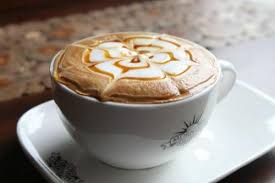
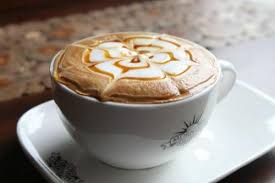

 Coffee Drinks
Coffee Drinks
Coffee Drinks
- Drink
- Preparation
- Temperature
- Ingredients
Details
Cappuccino
- Espresso
- Hot
- Equal amount of espresso and steamed milk
- Pour the espresso through the milk and serve
Latte
- Espresso
- Hot
- 2/3 or more steamed milk and espresso
- Pour the espresso through the milk and serve.
Macchiato
- Espresso
- Hot
- Espresso with just a "mark" of steamed milk
- Add milk to the expresso after pressing.
Iced Coffee
- Drip or french press
- Cold
- Coffee poured over ice
- Can be sweetened with sugar or creme.
Frappé
- Strong instant coffee
- Cold
- Instant coffee, water and milk
- Shake to create a foam, then pour over ice and serve. A specialty in Greece
Flat white
- Espresso
- Hot
- 1/3 espresso and 2/3 steamed milk
- A specialty in Australia and New Zealand. The foam is often decorated with a motif.